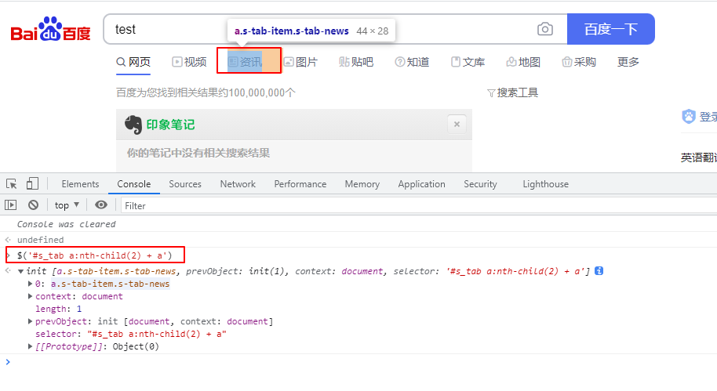
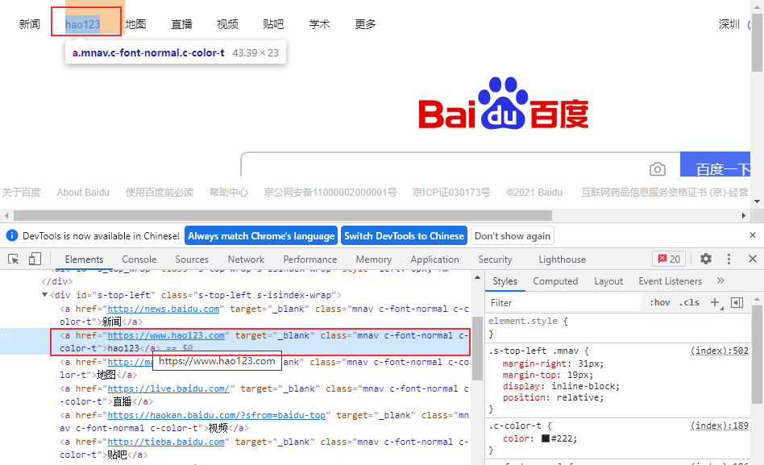
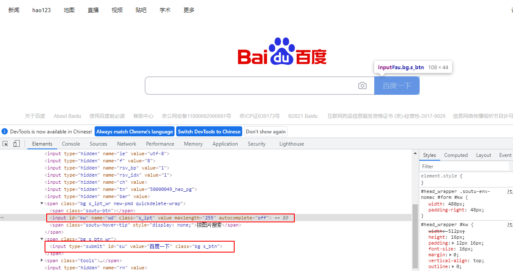

要对web页面进行控制，首先需要定位到页面对应的元素，和Selenium一样，playwright也支持多种元素定位方法，下面来介绍它支持的元素选择器。
playwright主要的选择器:
| Locator | Description |
|---|---|
| text | 文本值 |
| css selector | CSS 选择器 |
| xpath | xpath表达式 |
| React selector | React选择器 |
| Vue selector | Vue 选择器 |
| id, data-testid, data-test-id, data-test | 属性值，只支持这4种属性。其它属性需要通过css方式 |
可以和Selenium对比来看：Selenium Web元素定位方法 。
其中Vue selector和React selector目前还是实验性的功能，这里不做更多介绍。
Text 定位
通过文本值定位

点击【学术】：1
2
3page.click('text="学术"')
# 或者
page.click('"学术"')
属性值定位
只支持id, data-testid, data-test-id, data-test这4种属性值，其它属性需要使用css表达式。

1 | page.fill("id=kw", "test") |
其它属性值定位：1
2
3
4
5
6
7page.fill('css=[id="kw"]', "test")
page.fill('css=[class="s_ipt"]', "test")
page.fill('css=[name="wd"]', "test")
# 也可以简化为
page.fill('[id="kw"]', "test")
page.fill('[class="s_ipt"]', "test")
page.fill('[name="wd"]', "test")
xpath定位
xpath 定位语法介绍可参考：Web自动化测试：xpath & CSS Selector定位 。

使用xpath定位上图中的【资讯】：1
page.click('//*[@id="s_tab"]//a[2]')
css selector 定位
CSS常规用法
css selector 定位语法介绍可参考：Web自动化测试：xpath & CSS Selector定位 。
点击【资讯】：1
page.click("#s_tab a:nth-child(2) + a")
定位可见元素
1 | page.click("button:visible") |
伪类：:has()
父元素包含某个子元素

1 | page.click("#s-top-left:has(a) > a:nth-child(2)") |
伪类：:is()
选择其中任何一个元素，点击【新闻】
1 | page.click(':is(a:has-text("新闻"), a:has-text("News"))') |
通过页面布局定位元素
Playwright可以通过页面布局来定位元素，下面来定位输入框右边的【百度一下】

1 | page.click('input:right-of(#kw)') |
主要包括以下5种用法：
:right-of(inner > selector)- 匹配 inner selector的任意右边元素:left-of(inner > selector)- 匹配inner selector左边元素:above(inner > selector)- 匹配inner selector上面的元素:below(inner > selector)- 匹配inner selector下面的元素:near(inner > selector)- 匹配inner selector附近 ( 50 pixels以内) 的元素。
组合定位
文本定位方法可以和css、xpath等方法组合
1 | page.click('css=[class="bg s_btn"] >> text=百度一下') |
定位第n个元素：:nth-match()
如果定位到多个元素需要选择其中某一个，可以使用:nth-match()，索引从1开始。
点击【hao123】:1
page.click(':nth-match(#s-top-left > a, 2)') # 点击匹配到的第2个元素
注意：和 :nth-child() 不同之处在于，:nth-match()匹配的元素可以不是邻居关系。
完整测试代码
1 | from time import sleep |
总结
playwright和Selenium的元素定位方法有相似之处，因为都是对相同的WEB页面元素进行定位，所以差别不大，区别在于它们的定位方式，Selenium对每种选择器提供了对应的方法，而playwright只需要写定位表达式就可以了，不需要指定具体方法。从这一点来看，playwright是非常方便的。
本文标题:Web自动化测试之playwright：Web元素定位
文章作者:hiyo
文章链接:https://hiyongz.github.io/posts/web-testing-with-playwright-for-locator/
许可协议:本博客文章除特别声明外，均采用CC BY-NC-ND 4.0 许可协议。转载请保留原文链接及作者。